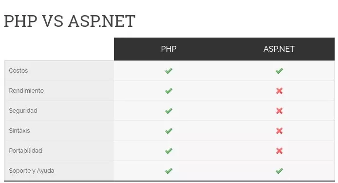

Un factor que a todo programador le interesa al momento de elegir una tecnología es el tema del costo para usar la misma. En este caso PHP es completamente gratis, mientras que ASP.NET es un producto de Microsoft. Esto significa que hay ciertos costos con la implementación de ASP.NET, a continuación nombraremos los mas importantes.
Para desarrollar en ASP.NET es necesario contar con una PC con el sistema operativo de Microsoft Windows, ya que el desarrollo de ASP.NET es posible solo en una máquina con dicha cualidad. Este no es un factor menor aunque no muy importante ya que casi todos los usuarios de hoy en día cuentan con dicho sistema operativo instalado en sus ordenadores. Esto en PHP no es un requerimiento ya que dicho lenguaje puede ser desarrollado en cualquier sistema operativo, ya sea Windows, Linux o Mac. En el caso de ASP.NET es cien porciento necesario que la aplicación corra sobre un servidor que cuenta con un sistema operativo Windows Server. Hace pocos años el alojamiento en servidores con Windows era significativamente más costoso que un alojamiento en un servidor bajo Linux. En la actualidad es posible contratar un alojamiento web en un servidor con Windows casi al mismo precio que en un servidor con Linux. ASP.NET necesita de servidores Windows para correr nativamente, si bien hay emuladores y entornos virtualizados que permiten ejecutarlo en Linux, no es lo ideal si queremos tener un funcionamiento 100% compatible y sin errores.
Otro punto muy importante en este versus PHP vs ASP.NET es tomar consciencia de la elección de la tecnología de desarrollo que sesa veloz a la hora de ejecutarse en el lado del servidor. El rendimiento de la gran mayoría de las aplicaciones web se basa en la interacción entre el script o código escrito por el programador y la base de datos alojada en el servidor. La mayoría de las aplicaciones escritas en PHP son ejecutadas en servidores con un sistema operativo Linux, un servidor Apache y base de datos MySQL. Este paquete de tecnologías es llamado con el nombre LAMP (Linux, Apache, MySQL y PHP) en donde cada una de las letras hace referencia a las tecnologías mencionadas anteriormente. LAMP es la combinación mas común y popular en el área de desarrollo de páginas webs, por lo tanto, se ha optimizado para un rendimiento mejorado extensivamente. Aunque en los últimos años han surgido nuevos stacks como LEMP (Linux, Nginx, MySQL y PHP) que hacen que el rendimiento de PHP-FPM sea aún más notorio al correr con Nginx como servidor web. En el caso de ASP.NET el sistema operativo usado de forma necesaria es Windows en donde el mismo por lo general se conecta con base de datos MSSQL (Microsoft SQL Server). Otro de los factores relacionados al rendimiento de nuestra aplicación es el sistema operativo en donde se ejecuta. Gran cantidad de pruebas indican que Linux y su sistema de archivos EXT4 tiene mejor rendimiento y velocidad que el sistema NTFS de Windows, por lo que es más probable que una aplicación PHP alojada en un servidor Linux funcione mejor que una aplicación similar desarrollada en ASP.NET alojada en un servidor Windows. Aquí es donde no vemos tanto avance en las tecnologías de Microsoft sobre las de Linux y PHP.
quí entra mucho en juego el tema de las actualizaciones y arches de seguridad para tapar bugs en los dos diferentes lenguajes. PHP es código abierto, y tiene una comunidad de desarrolladores encargados de mantenerlo lo más seguro posible, éstos se encargan de actualizar las versiones de PHP y subirlas a los repositorios con tan solo horas de comunicados los diferentes bugs. En el caso de Microsoft, como todos sabemos, se toman su tiempo para publicar parches de seguridad en sus piezas de software, y no hablamos de días, aveces demoran semanas o meses. En este caso ASP lleva las de perder en comparación a PHP. A nivel general de la seguridad de cada uno de los servidores ASP.NET o PHP, ambos tienen muy buena arquitectura de seguridad para prevenir y reducir las chances de ciertos tipos de ataques.
PHP utiliza una sintáxis de desarrollo en su lenguaje que es muy similar a Java, Javascript o C, que son lenguajes muy populares y multiplataforma. Es decir que si ya aprendiste Java o C antes, PHP no te será nada difícil. Al momento de desarrollar nuestra web en ASP.NET necesitamos de realizarlo en una plataforma especifica de Microsoft llamada Visual Studio mientras que en PHP se puede realizar en cualquier editor de texto como Sublime Text, Atom, o incluso en block de notas.
PHP permite una mayor portabildiad que ASP.NET, ya que al ser un lenguaje multi-plataforma, se puede ejecutar tanto en Linux, Windows o cualquier derivado de BSD (como Mac incluso). Mientras que ASP.NET queda siempre «atrapado» en la plataforma de Microsoft debido a problemas de compatibilidad en el resto de los sistemas operativos. En este aspecto, PHP le lleva ventaja y mucha, no hay que olvidarlo.
Se necesita una mayor cantidad de código para lograr cosas complejas con ASP.net en comparación con PHP, lo que agrega más tiempo al proceso de desarrollo en general. PHP tiene la ventaja también de que se interpreta directo desde el server mismo, por lo que cuando necesitas agregar nuevas funcionalidades o procesos a tu código, no necesitas más que guardar el archivo y darle F5 en tu navegador. ASP.NET por otro lado necesita de compilar el código cada vez que se modifica tu código. En resumen, desarrollar en ASP.net te lleva más tiempo que en PHP.
En este aspecto de la comparativa PHP vs ASP.NET, PHP lleva las de ganar, ya que al ser código libre y gratuito es uno de los lenguajes de programación en línea más elegido y popular. Existe una enorme comunidad de desarrolladores de código abierto que aportan su conocimiento y ayudan al desarrollo de PHP, haciéndolo a este lenguaje tener una curva de aprendizaje más fácil para aquellos que recién están comenzando. Por otro lado ASP.NET al ser propiedad de Microsoft, no tiene una comunidad tan extensa, ni tampoco gran cantidad de foros de ayuda como sucede con PHP. Si bien existen foros de desarrolladores entusiastas de ASP.NET, la realidad es que no se respira tanto ambiente de comunidad y colaboración desinteresada como en los foros de PHP. A nivel práctico, si bien PHP tiene más comunidad y gente detrás, a la hora de buscar ayuda en algún problema, seguramente podrás encontrar la respuesta para ambos lenguajes sin problema, en este caso no vemos tanta ventaja de PHP sobre ASP.NET
La Web surgió como un sistema de información distribuido basado en red y en el protocolo de hipertexto (HTTP), ofreciendo información estática. En la actualidad las aplicaciones web son cada vez más sofisticadas y requieren de una tecnología más avanzada para presentar la información dinámicamente. La tecnología JavaServer Pages (JSP) está posicionada en la cresta de la ola en la evolución del desarrollo de aplicaciones web. Las soluciones de primera generación incluyeron CGI, que son un mecanismo para ejecutar programas externos en un servidor web. El problema con los scripts CGI es la escalabilidad, ya que se crea un nuevo proceso para cada petición. Las soluciones de segunda generación las proporcionaron vendedores de servidores Web en forma de plug-ins y APIs para sus servidores. El problema es que sus soluciones eran específicas a sus productos servidores. Por ejemplo, Microsoft proporcionó las páginas activas del servidor (ASP) que hicieron más fácil crear el contenido dinámico. Sin embargo, su solución sólo trabajaba con Microsoft IIS o Personal Web Server. Otra tecnología de segunda generación son los Servlets, que hacen más fácil escribir aplicaciones del lado del servidor usando la tecnología Java. Las páginas JSP son una solución de tercera generación que se pueden combinar fácilmente con algunas soluciones de la segunda generación, creando el contenido dinámico, y haciéndo más sencilla la construcción de aplicaciones basadas en Web que trabajan con multitud de tecnologías, como servidores Web, navegadores Web, servidores de aplicación y otras herramientas de desarrollo. La tecnología JSP está basada en el lenguaje de programación Java y encaminada a facilitar el desarrollo de sitios web. Mediante el uso de páginas JSP podemos incorporar contenido dinámico en sitios web mediante código Java embebido a través de etiquetas especiales < % % >. Las páginas JSP son archivos de texto con extensión .jsp que contienen etiquetas HTML, junto con código Java embebido, que permite el acceso de la página a datos desde ese código Java ejecutado en el servidor. Cuando se solicita una página JSP, la parte HTML se procesa en el cliente, sin embargo, el código Java se ejecuta en el momento de recibir la petición y el contenido dinámico generado por ese código se inserta en la página antes de devolverla al usuario. Esto proporciona una separación entre la parte de presentación HTML de la página y la parte de lógica de programación incluida en el código Java. La tecnología JSP también es capaz de gestionar Sesiones de Usuario y proporcionar la capacidad de acceso a datos remotos a través de mecanismos como Enterprise JavaBeans (EJB), Java Database Connectivity (JDBC) y Remote Method Invocation (RMI).
Frente a ASP JSP y ASP ofrecen funciones similares. Ambos utilizan etiquetas para permitir código embebido en una página HTML, ofreciendo seguimiento de sesión, y conexión a bases de datos. • Algunas de las diferencias triviales son: Las páginas ASP están escritas en VBScript y las páginas JSP están escritas en lenguaje Java. Por lo tanto, las páginas JSP son independientes de la plataforma y las páginas ASP no lo son. • Las páginas JSP usan tecnología JavaBeans como arquitectura de componentes y las páginas ASP usan componentes ActiveX. • Aunque las páginas ASP siempre son interpretadas, las páginas JSP son compiladas en Servlets Java y cargadas en memoria la primera vez que se las llama, y son ejecutadas para todas las llamadas siguientes. Esto le da a las páginas JSP la ventaja de la velocidad y escalabilidad sobre las páginas ASP. Frente a Servlets JSP no nos ofrece nada que no pudierámos realizar con un servlets. Pero es mucho más conveniente escribir y modificar código HTML, que tener que realizar gran cantidad de sentencias println que generen HTML. Además, separando el formato del contenido podemos poner diferentes personas en diferentes tareas: nuestros expertos en diseño de páginas Web pueden construir el HTML, dejando espacio para que nuestros programadores de servlets inserten el contenido dinámico. Frente a SSI SSI es una tecnología ámpliamente soportada que incluye piezas definidas externamente dentro de una página Web estática. JSP es superior porque nos permite usar servlets en vez de un programa separado para generar las partes dinámicas. Además, SSI realmente está diseñado para aplicaciones sencillas, no para aplicaciones que usen formularios de datos, hagan conexiones a bases de datos, etc. Frente a JavaScript JavaScript puede generar HTML dinámicamente en el cliente. Esto es una capacidad útil, pero sólo maneja situaciones donde la información dinámica está basada en el entorno del cliente. Con la excepción de las cookies, el HTTP y el envio de formularios no están disponibles con JavaScript. Y, como se ejecuta en el cliente, JavaScript no puede acceder a los recursos en el lado del servidor, como bases de datos, catálogos, información de precios, etc.